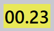
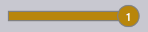

Auftragsansicht
Dieser Abschnitt erläutert die verschiedenen verfügbaren Ansichten in der Auftragsansicht, einschließlich Aufträge, Teile, Schachtelungen, Bearbeiten, Simulieren und Exportieren.
Aufträge
Durch Auswahl der Option Jobs wird eine Liste aller derzeit in der Software eingerichteten Aufträge angezeigt. Sie können auf einen Auftrag doppelklicken, um dessen Details anzuzeigen, oder mit der rechten Maustaste klicken, um auf weitere Optionen zuzugreifen.
-
Aufträge werden in der Kachelansicht dargestellt, wobei jeder Auftrag mit grundlegenden Eigenschaften wie Auftrags-ID, Auftragsreferenz, Kundenname, Gesamtanzahl Teile, Fälligkeitsdatum, Auftragsstatusleiste usw. angezeigt wird.
-
Jede Auftragskachel zeigt auch Teilebilder in einem gestapelten Kartenformat an. Sie können mit dem Mausrad durch alle Teile eines Auftrags scrollen.

Auftragsdetails
-
Ein Doppelklick auf eine Kachel oder das Drücken der Taste Enter nach Auswahl einer Kachel wechselt zur Detailansicht.
-
Die Detailseite zeigt die Teileliste zusammen mit den verschachtelten Blechen (Layouts) an, sofern vorhanden.
-
Verwenden Sie die Pfeiltasten Auf/Ab, um in der Detailseite zwischen Aufträgen zu wechseln.
-
Das Scrollen mit dem Mausrad über den Teilestapel hebt das Teil sowohl in der Teileliste als auch in den Layouts hervor.
-
Durch Auswahl eines Layouts werden das Layout und alle darauf verschachtelten Teile in der Teileliste hervorgehoben. Die Hervorhebungen werden nach einer Minute automatisch deaktiviert.

-
Zusammenfassung der Schachtelung:
-
Teile: Zeigt die Gesamtanzahl der Auftragspositionen und die Gesamtmenge im Auftrag an.
-
Tafeln: Zeigt die Gesamtanzahl der verschachtelten Bleche zusammen mit der Gesamtblechmenge an.
-
-
Arbeitsschritte:
-
Biegen: Zeigt die zugewiesene Maschine und deren zu verarbeitende Auftragsmenge an.
-
Schneiden: Zeigt die zugewiesene Maschine und deren zu verarbeitende Auftragsmenge an.
-
Priorität
-
Klicken Sie zunächst auf das Symbol Jobs auf der linken Seite des Bildschirms, wählen Sie den zu bearbeitenden Auftrag aus und klicken Sie dann auf Bearbeiten auf der rechten Seite des Bildschirms (stellen Sie sicher, dass die Option Jobs ausgewählt ist).
-
Alternativ klicken Sie mit der rechten Maustaste auf den ausgewählten Auftrag und klicken Sie auf das Symbol Dokument zur Bearbeitung auschecken.
-
Wenn Sie auf Bearbeiten klicken, erscheint das Fenster Auftrag bearbeiten. In diesem Fenster können Sie die Priorität für den Auftrag festlegen oder ändern.

-
Basierend auf der Auftragsteilpriorität wird die Auftragsreferenz in der Auftragskachel entsprechend farblich schattiert.
-
Auftragsteile werden zuerst nach Priorität und dann nach Fälligkeitsdatum sortiert. Sie werden ebenfalls entsprechend ihrer Priorität farblich schattiert.
-
Beim Schachteln werden Dringend-Teile zuerst berücksichtigt, gefolgt von Hoch, dann Normal, und schließlich werden Niedrig-Prioritätsteile im verbleibenden Platz auf den Schachtelblechen platziert.
-
Schachtelbleche werden ebenfalls nach Priorität sortiert und farblich schattiert.
| Auftragspriorität | Farbbeschreibung |
|---|---|
|
Dringend |
|
Normal |
 |
Hoch |
|
Niedrig |


Status
-
Die Auftragsstatusleiste verwendet Farbcodes, um den Fortschritt oder Zustand des Auftrags basierend auf der verarbeiteten oder verbleibenden Menge anzuzeigen.
-
Die Teile innerhalb des Auftrags und die Schachtelbleche werden ebenfalls mit entsprechenden Farben hervorgehoben, um ihren individuellen Status innerhalb des Gesamtauftrags widerzuspiegeln.
-
Die Farbcodierung verbessert die Nachverfolgung und stellt sicher, dass Bediener den Produktionsstatus auf einen Blick erkennen können.


| Auftragsstatus | Beschreibung |
|---|---|
|
Nicht bereit |
|
Schachteln |
|
Bereit |
|
Biegen geplant |
|
Blechtafel fehlt |
 |
Biege-Warteschlange |
|
Schneide-Warteschlange |
|
Erledigt |


Teile
Die Ansicht Aktive Teile zeigt alle Teile an, die derzeit in aktiven Aufträgen in Bearbeitung sind.
Jedes Teil wird als Kachel mit wichtigen Details wie Teilename, Abmessungen, Material, Dicke, Menge und Fälligkeitsdatum dargestellt. Eine visuelle Vorschau des Teils wird ebenfalls angezeigt.
Diese Ansicht hilft Benutzern, den Verarbeitungsstatus einzelner Teile zu überwachen und deren Fortschritt in laufenden Aufträgen zu verfolgen.

Schachtelungen
Die Ansicht Aktive Schachtelungen zeigt alle Schachtelungen an, die derzeit in aktiven Aufträgen in Bearbeitung sind.
Jede Schachtelung wird mit relevanten Details wie Anzahl der Teile und Verarbeitungsstatus dargestellt. Ein visuelles Layout der verschachtelten Teile wird ebenfalls angezeigt.
Diese Ansicht hilft Benutzern, den Schachtelungsfortschritt zu überwachen und zu verfolgen, wie Teile auf Blechen angeordnet und verarbeitet werden.

Bearbeiten
Die Option Bearbeiten ermöglicht es Ihnen, das ausgewählte Element zu modifizieren.
Basierend auf der aktuellen Ansicht wird die ausgewählte Instanz zur Bearbeitung geöffnet:
-
In der Auftragsansicht wird der ausgewählte Auftrag zur Bearbeitung geöffnet.
-
In der Ansicht Aktive Teile wird das ausgewählte Teil zur Bearbeitung geöffnet.
-
In der Ansicht Aktive Schachtelungen wird die ausgewählte Schachtelung zur Bearbeitung geöffnet.

CSV exportieren
Die Option Exportieren ermöglicht es Ihnen, Auftragsinformationen auszuwählen und in eine CSV-Datei zu exportieren.
-
Klicken Sie auf das Symbol Jobs.
-
Klicken Sie auf die Option Exportieren auf der rechten Seite des Bildschirms.

-
Ein Dialogfeld erscheint mit den verfügbaren Feldern:

-
Aktivieren Sie die Kontrollkästchen für die Felder, die Sie exportieren möchten.
-
Use the Group By option if you want to group the data by a selected field.
-
Click Export to generate the CSV file.
Additional information
There is also three additional icons on the right of the screen which are simulieren, Goto and zurück.
-
Simulate will open the selected item for a more detailed view.
-
Goto will switch the focus and display on the part or the nest that is selected.
-
Back will go back one level from where you currently are, for example clicking zurück while in simulation will take you back to the main job and from a job will take you back to the main jobs display.